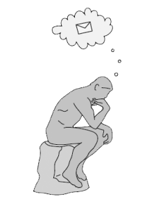

File
New
2nd level dropdown
Social Project
New Social Project
Open Social Project
Email Project
New Email Project
Open Email Project
Save
Save As
Properties
Navigate
Send
Ctrl+Alt+Enter
Reset
Ctrl+Alt+Esc
Delete
Ctrl+Delete
Attach
Image
Document
Audio
Settings
Help
About
It's look like lonely here

You have not started any social project.
Press Ctrl+N to start new project or
Start from here